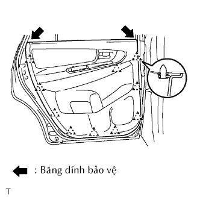

LOA PHÍA SAU > THÁO |
| 1. NGẮT CÁP ÂM RA KHỎI ẮC QUY |
| 2. THÁO ĐẾ PHÍA TRÊN TỰA TAY TRÊN CỬA SAU TRÁI |
 |
Tháo vít.
Dùng một tô vít, nhả khớp 2 kẹp và 8 vấu. Tháo đế tựa tay cùng với công tắc nâng hạ cửa sổ theo hướng như được chỉ ra bởi mũi tên trong hình vẽ.
w/ Cửa sổ điện:
Ngắt giắc của công tắc.
 |
w/o Cửa sổ điện:
Dùng tôvít, nhả khớp 2 vấu và tháo công tắc nâng hạ kính.
| 3. THÁO TẤM ỐP TRANG TRÍ CỬA SAU TRÁI |
|  |
Dùng tôvít, nhả khớp 10 kẹp và tháo tấm ốp.
Dùng tôvít, nhả khớp 5 vấu và tháo gioăng bên trong.
| 4. THÁO CỤM LOA NO.1 SAU TRÁI |
 |
Ngắt giắc nối.
Dùng mũi khoan có đường kính nhỏ hơn 4 mm, khoan 3 mũ đinh tán để tháo loa.
Tiếp tục khoan và đẩy các mảnh vỡ của đinh tán ra.
Dùng một máy hút bụi chân không, làm sạch hạt vỡ của đinh tán và phoi từ bên trong của cửa.